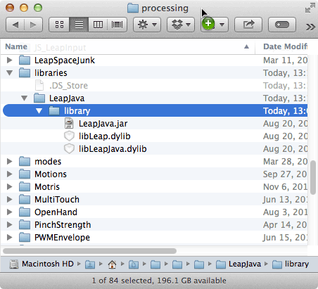
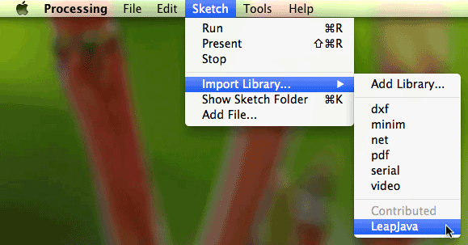
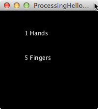

Using Processing¶
You can use the Leap Motion Java libraries in a Processing Sketch (in Java mode). This involves adding the Leap Motion files to the Processing libraries folder and importing the Leap Motion classes into the Sketch.
Setting Up the Leap Motion Libraries¶
To put the Leap Motion Java libraries in the Processing libraries folder, do the following:
- Locate and open your Sketchbook folder. (The path do this folder is listed in the Processing Preferences dialog.)
- Find the folder named libraries in the Sketchbook folder, if it exists. Create the folder, if necessary.
- Inside libraries, create a folder named, LeapJava.
- Inside LeapJava, create a folder named, library.
5. Find your LeapSDK folder (wherever you copied it after downloading). 5. Copy the following 3 library files from LeapSDK/lib to LeapJava/library
OS Libraries Linux 32bit LeapJava.jar x86/libLeapJava.so x86/libLeap.so Linux 64bit LeapJava.jar x64/libLeapJava.so x64/libLeap.so Mac OS X LeapJava.jar libLeapJava.dylib libLeap.dylib Windows 32bit LeapJava.jar x86/LeapJava.dll x86/Leap.dll WIndows 64bit LeapJava.jar x86/LeapJava.dll x86/Leap.dll On Linux and Windows, you must make sure that you use the 32bit versions of the libraries with the 32bit versions of Python and the 64bit libraries with 64bit Processing.
The Sketchbook file structure on the Mac. (Linux and Windows are similar, but use different library file names.)
Creating a Simple Sketch¶
Now create a simple sketch using the Leap Motion libraries to make sure things are set up properly.
Create a new Sketch.
In the Processing menu, choose Sketch>Import Library>LeapJava
Processing adds the Leap library import statement to your sketch:
import com.leapmotion.leap.*;
Add code to create a Controller object:
Controller controller = new Controller();
The Leap Motion Controller object is the source of tracking data (in the form of Frame objects).
In your sketch draw() function, get a Frame of tracking data from the controller:
Frame frame = controller.frame();
Since this is in the draw() function, the frame containing the tracking data is updated at the frame rate of the sketch.
Finally, display the number of hands and fingers in view by adding the following code:
text( frame.hands().count() + " Hands", 50, 50 ); text( frame.fingers().count() + " Fingers", 50, 100 );
The Frame object contains lists of both hands and fingers. (You can also get fingers from each visible hand.)
All together, your sketch should look like this:
import com.leapmotion.leap.*;
Controller controller = new Controller();
void setup(){
size( 200, 200 );
}
void draw(){
background(0);
Frame frame = controller.frame();
text( frame.hands().count() + " Hands", 50, 50 );
text( frame.fingers().count() + " Fingers", 50, 100 );
}
Plug in your Leap Motion device and run the script. The results should look like this:
And that’s all there is to it. You can now use the full Leap Motion Java API.
Exporting a Sketch as an Application¶
The standard Processing Export Application command works for the current platform – in other words, you can build an application package for the Mac if you are currently programming on a Mac. However, since the Leap Motion Java API calls native libraries, you must copy the correct libraries into the versions for each Operating System and Platform that you export (see the table above). Note that the Leap Motion SDK download only includes the libraries for a single operating system. You must download SDKs for the other operating systems separately.